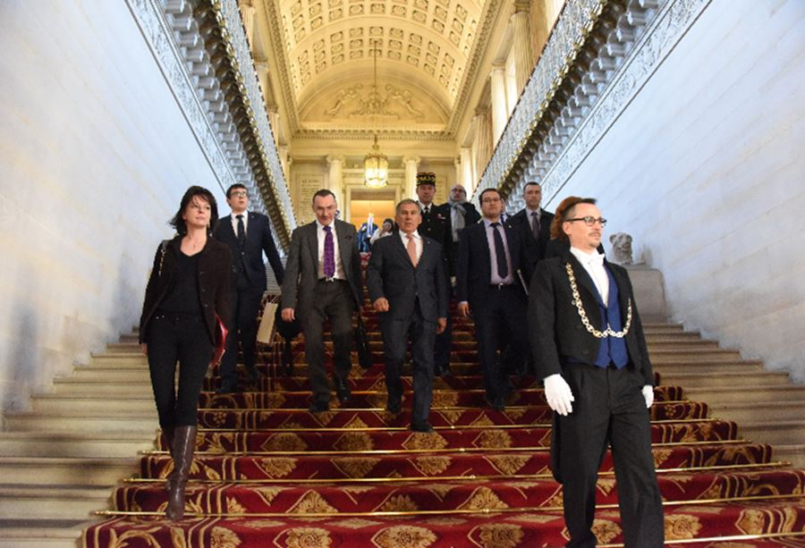
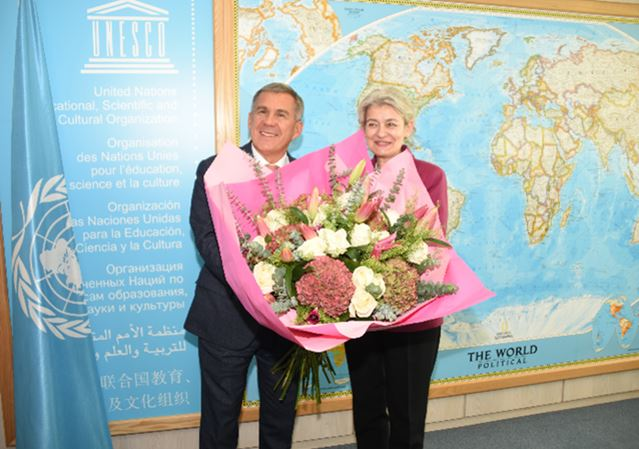
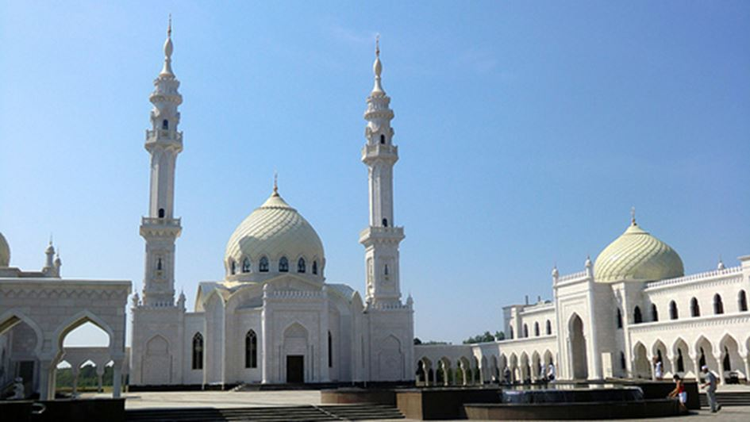
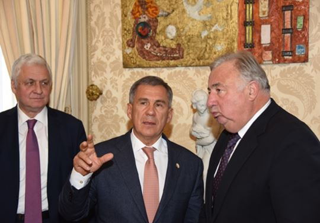
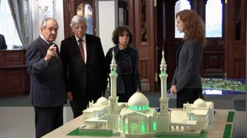
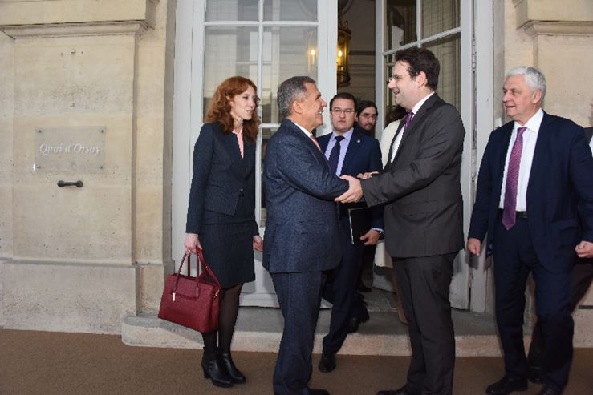
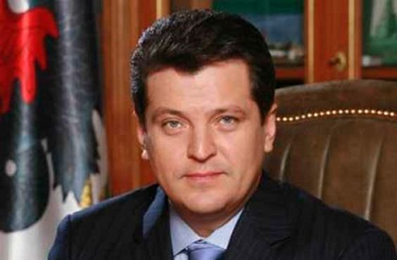
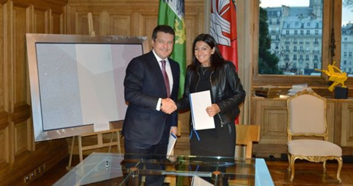

1. VISITE DU PRÉSIDENT DE LA RÉPUBLIQUE DU TATARSTAN, RUSTAM NURGALIEVITCH MINNIKHANOV
Si en France comme en Russie on regrette que les relations entre les deux pays ne soient pas au niveau auquel elles devraient être à la suite de décisions politiques hasardeuses, il n’en demeure pas moins que le lien n’est pas rompu et que les échanges se perpétuent dans de nombreux domaines.
Les 29 et 30 janvier 2017, le Président de la République du Tatarstan, Rustam Nurgalievitch MINNIKHANOV a effectué pour la première fois depuis sa prise de fonctions en qualité de Président de la République du Tatarstan, une visite officielle de travail.
Accompagné d’une importante délégation de hauts fonctionnaires d’état, d’industriels et de personnalités du monde des affaires, il a passé 48 heures à Paris à un rythme coutumier pour un coureur automobile comme lui, c’est-à-dire à 200 km/heure.
Le séjour a débuté le 29 novembre par un grand concert réunissant les plus grands artistes tatars du moment. 80 musiciens, chanteurs, et danseurs se sont succédé sur la scène de l’auditorium de l’ambassade de la Fédération de Russie à Paris, offrant un spectacle des plus extraordinaires dont tous les participants ont salué avec enthousiasme et admiration la qualité exceptionnelle. Il ne fait aucun doute que cette soirée fera partie des plus grands événements de l’année 2016, et même au-delà de cette seule année, accueillis par l’ambassade de la Fédération de Russie.
Après ce spectacle éblouissant qui mettait en exergue la spécificité si originale du Tatarstan et du mode de vie de ses habitants, l’ambassadeur Alexandre ORLOV a offert un buffet que les participants français ne sont pas prêts d’oublier. Tandis que dans les couloirs se tenaient une exposition de photos du Tatarstan moderne et de l’artisanat local.
Une rencontre entre le Président MINNIKHANOV et la diaspora tatare en France s’est déroulée dans un des salons au cours de laquelle le président a entendu les représentants de la communauté tatare de France et remis quelques décorations.
Dans son allocution en direction de la diaspora tatare, le Président MINNIKHANOV a manifesté avec chaleur son souhait que soit organisé de manière visible et attirante le Sabantuy 2017 à Paris en un lieu accessible et ouvert susceptible de mieux faire connaître des Parisiens ce grand festival culturel tatar désormais fêté dans le Monde entier.
La journée du 30 novembre était consacrée aux visites et rencontres protocolaires et professionnelles.
Après une séance de travail intensif au siège du MEDEF-International au cours de laquelle ont été signés quatre accords de coopération entre des entités tatares et des entreprises françaises, la délégation présidentielle s’est rendue au siège de l’UNESCO afin d’y rencontrer Mme BUKOVA, Directrice générale de l’UNESCO qui apporte une attention très spéciale et favorable au classement du deuxième site tatar au patrimoine universel : la ville de Bolgar.

Mosquée de Bolgar
A l’aspect culturel a succédé l’aspect politique avec la réception du Président MINNIKHANOV par le Président du Sénat de France, deuxième personnage de la République Française : Monsieur Gérard LARCHER. Les relations entre le Sénat de France et la République du Tatarstan sont anciennes car elles ont été établies dès 1991 lorsque de Président de la nouvelle République du Tatarstan, Mintimer Charipovitch CHAÏMIEV a souhaité tisser des liens étroits avec une institution française proche structurellement de la république du Tatarstan.
Ces liens ne se sont jamais distendus et c’est avec un plaisir visible que le Président LARCHER a fait honneur au Président MINNIKHANOV, qui lui non plus n’a pas masqué le plaisir de cette rencontre.
Alors que tant d’officiels français ignorent jusqu’à l’existence de la République du Tatarstan, le Président LARCHER a bien compris l’importance du Tatarstan dans l’économie de la Fédération de Russie et le rôle du Président MINNIKHANOV dans la gouvernance de la Fédération et de conseil auprès du Président POUTINE.
En octobre, c’est une personnalité politique française éminente qui avait fait le voyage à Kazan pour une mission d’étude sur l’Islam russe pratiqué au Tatarstan dans le cadre de sa fondation : Jean-Pierre CHEVENEMENT.
L’ancien ministre qui visitait la capitale tatare pour la première fois est revenu comme tous les Français qui se rendent à Kazan : Enchanté.
Cette visite a été évoquée dans les entretiens du Sénat car Jean-Pierre CHEVENEMENT, ancien sénateur du Territoire de Belfort, et conseiller spécial au Ministère des Affaires Etrangères de la France, n’a pas manqué de rapporter au Président LARCHER ses impressions enthousiastes.
La mi-journée étant atteinte, au cours d’un déjeuner offert par SE Alexandre ORLOV à la résidence de l’Ambassadeur, le Président MINNIKHANOV s’est entretenu avec Monsieur Christian ESTROSI, président de la région française « Provence-Alpes-Côte d’Azur » avec laquelle le Tatarstan a contracté un accord de coopération en 2014. Puis une fois le café bu, la délégation a pris le chemin du siège parisien de la société Schneider Electric, grand entreprise industrielle qui fut l’une des premières sociétés françaises à s’installer dans la Zone Economique Spéciale d’Alabuga et qui envisage une seconde implantation au Tatarstan.
 Le Président MINNIKHANOV et Monsieur Matthias FEKLDe retour de cette visite technique, le Président MINNIKHANOV était attendu au Quai d’Orsay pour une rencontre avec Monsieur Matthias FEKL, secrétaire d’état au Commerce Extérieur, au Tourisme et au Développement International.
C’est cette visite qui a clôt le programme officiel du Président MINNIKHANOV qui n’a pas pu profiter d’un Paris étrangement ensoleillé en cette saison car attendu à Moscou pour une autre réunion de travail.
Ces 48 heures de visite du Président MINNIKHANOV à Paris ont suscité une vague d’intérêt et de curiosité envers le Tatarstan. Les Français qui ont été impliqué dans cette visite ont découvert une « autre Russie » avec sa langue particulière, ses coutumes originales et surtout un dynamisme économique et technologique qui place pour la 3ème fois consécutive le Tatarstan en première place pour le climat favorable aux affaires.
Avec deux Zones Economiques spéciales, dont l’une consacrée intégralement à l’innovation et aux nouvelles technologies numériques (Innopolis) ; des événements sportifs, culturels, économiques de renommée mondiale, la République du Tatarstan apparaît comme l’une des régions de Russie les plus attractives.
Kazan est reconnue comme la 3ème capitale de la Fédération de Russie, et officiellement « capitale sportive de la Russie ». Ce titre ne devrait pas lui être disputé dans les deux années à venir car Kazan accueillera cinq matchs de la coupe du monde de football FIFA-2018 dont un quart de finale, ce qui ne manquera pas de renforcer la notoriété du Tatarstan dans le Monde.
2. VISITE DU MAIRE DE KAZAN M. ILSUR RAÏSSOVITCH METCHINE
A quelques jours de la visite à Paris du Président de la République du Tatarstan, Rustam Nurgalievitch MINNIKHANOV, c’est le Maire de Kazan qui s’est rendu dans la capitale française pour y signer un accord d’amitié et de coopération avec Paris.
Mardi 13 décembre c’est dans les salons prestigieux de l’Hôtel de Ville de Paris qu’a été officialisé un protocole d’accord entre la capitale française et la capitale tatare.
Cet accord s’articule essentiellement sur des échanges de valorisation touristique entre Paris et Kazan. Paris, lourdement éprouvée au cours des années 2015 et 2016 effectue des rapprochements avec des villes dynamiques à fort potentiel touristique et culturel. C’est le cas de Kazan.
 Ilsur Raïssovitch METCHINE et Anne HIDALGOEn paraphant le document, Anne HIDALGO, Maire de Paris, n’a pas oublié de mentionner que Paris était candidate pour l’organisation des Jeux Olympiques de 2024. Ilsur METCHINE a rappelé que Kazan bénéficiait d’une grande expérience en matière d’accueil d’événements sportifs d’envergure mondiale en citant : les Universiades de 2013, les Championnats du Monde de sports nautiques de 2014, les championnats d’Europe de Judo de 2015 et la prochaine venue en 2018 de la Coupe du Monde de football FIFA2018.
Parmi les opérations de promotion touristico-culturelles, il est envisagé de célébrer le Sabantuy 2017 à Paris sous la Tour Eiffel, dans les jardins du Champs de Mars. Cette fête traditionnelle tatare produit un enthousiasme collectif dans toutes les villes du monde où elle est célébrée. Le Sanbantuy 2017 sera sans aucun doute la façon la plus joyeuse de prendre contact avec la culture tatare.
Partager cette page